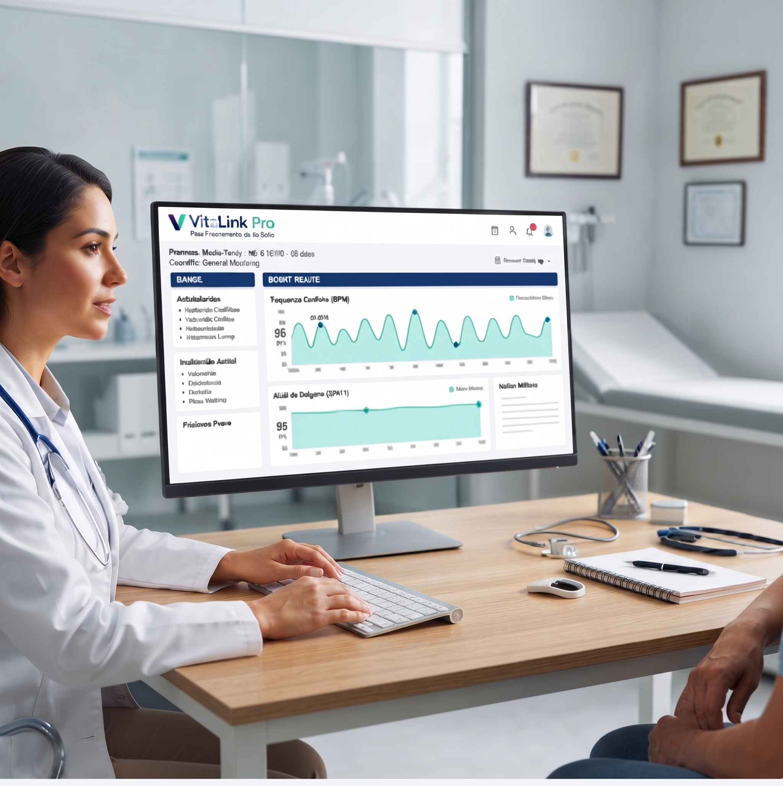

Optimice el seguimiento preventivo con monitoreo de precisión 24/7.
Reduzca reingresos hospitalarios y mejore el control de pacientes crónicos con alertas en tiempo real e integración con su flujo clínico. Tome decisiones con datos de alta frecuencia en una sola plataforma.
La tranquilidad de saber que tus padres están bien, sin interrumpir su día.
Monitoreo automático de signos vitales que avisa a la familia y a la clínica si algo no está normal. Todos ven el mismo estado actualizado, sin depender de llamadas constantes ni de que alguien recuerde avisar.

Institucional
Para redes hospitalarias y proveedores a gran escala.
- check Pacientes e infraestructura ilimitados
- check Servidores dedicados y cumplimiento regulatorio
- check Gestión de permisos y roles avanzados (RBAC)
- check EMR / HIS Integración directa a medida
- check Gestor de cuenta dedicado y SLA de 99.99%
Plan Básico
Ideal para probar el servicio con 1 familiar conectado.
- check Vista simple: todo bien o necesita atención
- check Alertas automáticas cuando un dato esté fuera de rango
- check Botón “ya atendí a mi familiar”
- check Historial de los últimos 7 días
- check 1 familiar conectado
- check Modo de captura simple con botones grandes
- check Botón de emergencia SOS básico
Plan Familiar
Coordinación integral y tranquilidad compartida.
- check Hasta 3 familiares conectados con roles diferenciados
- check Alerta detallada: qué pasó, gravedad y estado de atención
- check Ver quién ya revisó o atendió la alerta
- check Métrica exacta que originó la alerta
- check Historial ampliado a 30 días
- check Modo asistido para cuidadores
- check Contactos autorizados y notificaciones por rol
Familiar Plus
Para cuidado de alta complejidad y supervisión médica.
- check Hasta 6 familiares conectados
- check Historial ilimitado y reportes PDF
- check Niveles de acceso y privacidad por familiar
- check Vinculación directa con médico o clínica VitaLink
- check Línea directa con enfermería 24/7
- check Trazabilidad completa de cada alerta
- check Soporte técnico prioritario
La tranquilidad de miles de familias
Historias de quienes ya confían el cuidado de sus padres a VitaLink.